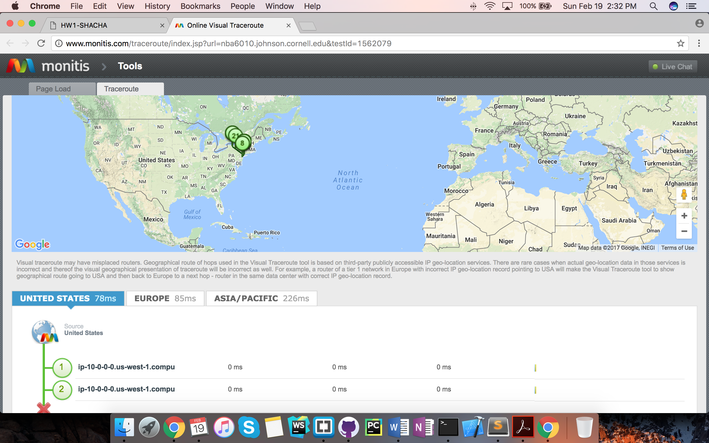
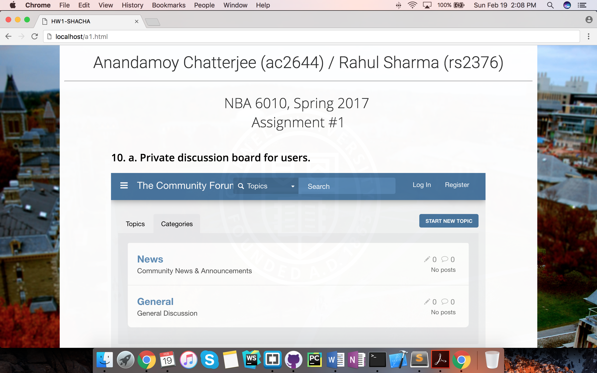

NBA 6010, Spring 2017 / Assignment #1
1. Pick a business.
The business we decided to work on is called Traveller. Traveller is like your smart travel assistant when you plan trips in the most famous cities of the world. From the beaches in Goa, India to Canals in Amsterdam, we have you all covered.
1. a. What are your products and services?
Products and Services: Traveller takes in input from the user in two levels.
I) The city of interest and the date of travel. Based on this user input, traveller recommends the most popular areas of the entered region (by scraping social media feeds) and the hour of operation attached.
II) The user is asked to select the places which he/she plans to travel. Based on this input, traveller comes up with an optimized route (that saves the user time and money) to incorporate all the travel plans in a concise and smart manner.
1. b What are your revenue sources?
Once the app and the website gain momentum, there are plenty of options. Advertisements on the website and app, integration with uber, providing a broad user base to local travel agents and receiving a commission in return, hotel and flight bookings.
2. a. Identify an existing business that can be considered a competitor to your business. Write a brief approximately 3-5 line description of their business as contrasted to yours. Describe what your competitive advantage might be.
One of the existing and currently most popular competitor in this domain is TripAdvisor. It provides all the local information, popular cuisines, places of interest in almost all cities all over the world.
Our business on the other hand has a more personalized touch. The algorithm after obtaining input from the user, seeks to accommodate that very specific itinerary in the most efficient and time-saving manner. It provides the user a very specific route contingent on the places selected by the users, hours of operation and includes the meal timings of every specific traveller. It relies on the very well-studied Travelling salesman problem, similar to the technologies used by UPS.
2. b. Include their company logo or other similar graphics in the description.
TripAdvisor logo is show below.
2. c. Create a link to their web site.
Click here to visit TripAdvisor's website.3. a. Create a link to your email address.
3. b. Sharing on social media.
4. Using Trace route to test connection speed and path.
Click here to see test resultsScreenshot of test results.
5. a. x
The macroeconomic models like average productivity is not a good indicator to point out subtle facts about specific businesses. The point explains that there can be delays in achieving productivity (due to tool-task fit, understanding the new technologies) but that does not mean that IT in general does not increase productivity. This challenges Solow’s argument the best.
5. b. y
The fact that productivity has been observed decades after the introduction of technology explains the lag which might be associated with it. The metric to estimate the average productivity does not reflect the truth because of the dynamic nature of the industry.
5. c. z
Network effect says that the value of a product to a user increases with the number of users using that product (for example, fax machines, social media networks). Since initially less number of people are using the product, the value attached is less and lead to delays in adoption.
6. a. y
Online education currently is now at an inferior level compared to classroom education. With the right set of technology, tool-task fit and advertising online education can replace the high-quality classroom teaching and hence can be a disruptive technology.
6. b. w
The dominant firms often ignore lower quality products. This can be an entry strategy for inferior products to slowly capture the market (as the cost associated is less) and slowly disrupt the whole market as technology improves.
6. c. Do you anticipate any disruptive technologies in your business? If yes, how do you expect to counter the threat; if no, why not?
Our business uses advanced machine learning and optimization algorithms to come up with a personalized route for the user. Currently, the technology and skill-set associated with it is rare and implementation requires high computational leverage.
There are few websites available that do provide generic information data on travel routes, but does not use provide a fair level of accuracy. These websites have the potential to be disruptive technologies. We plan to counter them by keeping a close watch on their technological progress and constantly improving our own technological prowess to provide a smoother better and valuable user experience. We plan to use our initial technical advantage by integrating with secondary technologies like uber and local travel agents making it a known name among the user base.
7. a. y
Social networking websites like Facebook and app based dating services like Tinder. The greater the number of users, the more value added to the product.
7. b. w
Bundling a new product with an established one helps provide exposure to it and potentially reduce the (positive) network effects. For example, Internet Explorer bundled with MS windows.
7. c. z
Uber has an indirect network effect. The more number of riders would make more cars accessible on the road and increase the value to the rider. It cannot be considered a direct network as increasing the number of riders does not add any value to another rider (again not considering uber pool).
8. a. z
4-foot-high transmitters that are installed on the tops of buildings in a city or town, transmit a wireless internet signal in the form of Millimeter waves. Subscribers install a small receiver — called a Starry Point — in their windows, which picks up the signal and converts it into one that a traditional router can then broadcast as normal Wi-Fi.
8. b. w
Automated grocery checkout by replacing bar codes with RFID at Stop and Shop. The cart has an RFID reader and a screen. It detects everything you put in your cart, and shows a tab on the screen. You check out by swiping your card at your screen. Hence, the use of cash registers would be reduced if the prices come down.
8. c. x
When an item is taken from the shelves, cameras use cues such as skin tone and body heat to identify a customer’s hand and then the product it is holding. Other sensors, such as pressure sensing pads embedded in the shelves and tiny radio transponders embedded in product packaging, help work out which item has been picked up or put down. If all else fails, the system can look up a customer’s past purchases and resort to informed guesswork.
9. a. z
Virtual corporations are loosely coupled businesses that can act like a single firm by rapidly banding and disbanding. It is enabled by their employees rapidly forming teams of collaboration electronically as if they are in the same office.
9. b. y
Virtual corporations are designed in such a way so as to meet the needs of the customer by combining various business together. Due to the presence of these independent businesses, coordination costs are more and consolidated control is lost. On the brighter side it can react to customer needs very fast and is very much in demand due to the fast changing technological environment.
9. c. w
InterSolve assembles "just-in-time" talent to solve problems or implement strategies for clients that range from IBM to First Interstate Bancorp. Once a job is complete, the consulting team disbands. It leads to sharing of industry based expertise in a fast and efficient manner.
9. d. Explain how you could convert your business to a virtual corporation. If your business cannot be converted to a virtual corporation, explain if universities can be converted to virtual corporations and how.
Our business provides an optimized route for the user when deciding their travel plans. In doing so, we use advanced machine learning concepts. It would be possible for us to collaborate with transport agencies like Uber/Lyft in the area. Integrating our user interface with local tourist agents for better location specific information, collaborating with private hospitals in case of unforeseen situations would lay the framework in forming a virtual corporation.
10. a. Private discussion board for users.
10. b. Embedded chat bar for readers.
11. Remote access.

11. b. Explain what the teammate sees on his computer, while it is being accessed by your computer.
As I accessed Anandamoy's computer from mine, he was able to keep working normally like before. The LogMeIn client installed on his system displayed my (client) details that included the following.
- Client's IP
- Client's user name
- Access type e.g. browser
- Duration of access
- Data transferred between client and host
Are there any warnings?
Apart from the LogMeIn client displaying the details of the remote user, there are no such warnings viz. pop-up box etc.
Can he tell it is being remotely accessed?
Yes, he can identify if he is being remotely accessed. As mentioned previously, the LogMeIn client installed on the host displays relevant information of the remote user. Additionally, the actions taken by the remote client viz. opening a new window/application reflects on the host system as well. The host user also receives an e-mail whenever a new remote user adds him/her.
How is it protected from unauthorized access?
To remotely access a system(host), a user needs to install the LogMeIn client on the host and login using his/her credentials. This step is called adding a computer. Then the user may access the LogMeIn website from a remote client, provide the credentials and access the host by providing the host's credentials.
Thus we see that an unauthorized access would require two sets of credentials viz. LogMeIn and the host itself. Also, the host needs to be in the ON state for remote access.
12. Conferencing and synchronous document sharing.

As seen in the screenshot above, video conferencing using Google Hangouts was a hassle-free experience. The Audio/Video quality was clear and comprehensible, without any lag. Hangouts allowed easy sharing of the conference so that more people can be added as needed. It also provided easy document sharing, emojis and a clean UI overall.
However, we did notice a few caveats associated with Hangouts. The A/V quality was a cut below than that of Skype. Additionally, if the two systems are too close to each other, Hangouts stops working and produces a screeching noise due to EM interference.
ii. Document sharing using Google Docs.

Shared document-editing using Google Docs was another no-frills experience. Google beat its competitiors over a huge margin here. Both of us were able to edit the document real-time and could see each other's mouse pointers (color-coded). Both of the mouse pointers were active simultaneously and there was no need to take turns to edit the document.
All changes made by the authors are promptly noted down with timestamps in the Revision History section. It might happen that both the authors are working on the same part of the document and that would lead to confusion and unexpected changes. It is advised that the authors have some kind of prior confirmation on the part of the document they wish to edit. Also, changing the margins, format style might create irregularities and it is recommended that the authors agree to a specific style format font and margin layout.
13. Live broadcast using Periscope.

14. Web server and local hosting.
Apache server status report, MacOS Sierra.

Webpage on localhost.
